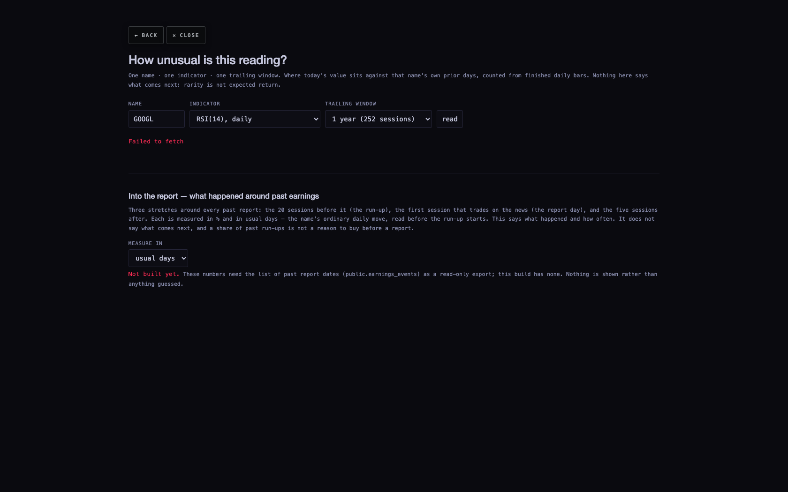
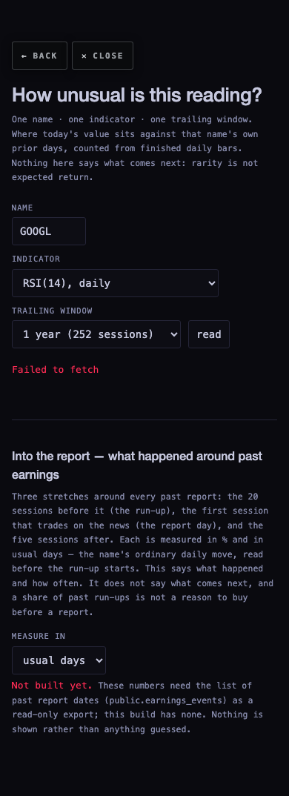
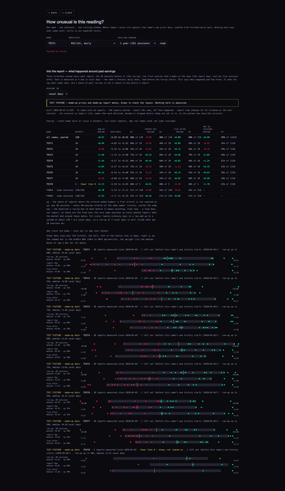
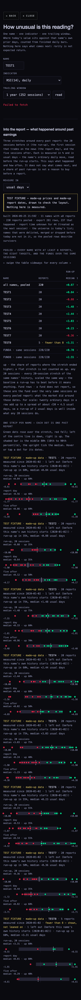

The measuring tool is built and checked. The real answer is not in it yet, because this worker could not read the list of past report dates.
STATUS · UNABLE — past report dates not readable → built everything else; the numbers appear from one command once the list is exported.
Nothing on this page is a measurement of GOOGL, MU, AVGO, AMZN or any real name. The pictures with names in them use made-up names (TEST1…TEST8) and say so on every strip.
What the page shows
A new section at the bottom of the statistics page, research/statistics/, called “Into the report — what happened around past earnings”. For every past report of a name it measures three stretches:
The run-up — from the close 20 sessions before the news to the last close before the news.
The report day — the first session that trades on the news. Reported before the open → that same day. After the close → the next day. Time not listed → treated as the next day, and counted as “unknown”.
The five sessions after.
Each is shown in % and in usual days — the name's ordinary daily move (the same one the statistics page already uses), read at the close before the run-up starts, so the move being measured never makes its own yardstick.
There is one table and one picture per name:
The table — all names pooled, then the eight targets, then SPY, QQQ, DIA, IWM and SMH over the very same sessions (a fund does not report, so its row says what the market did around those dates). Per row: how many reports, the middle value, the middle-80% range, and how often the stretch ended higher.
A baseline column — “any 20 sessions”: every 20-session stretch of the same names, scaled the same way. A run-up only means something if it beats what any 20 sessions do.
A strip per name — every past report is a dot, green if the stretch rose, red if it fell. Hover or tap a dot for its dates.
It says what happened and how often. It does not predict, and it says in plain words that a share of past run-ups is not a reason to buy before a report.
Pictures (taken headless, looked at one by one)

The branch as it is, 1680 wide, name GOOGL. The new section shows its heading and plain-words explanation, then in red “Not built yet” and why. No table, no dots, nothing guessed. At the top, “Failed to fetch” is the older part of the page asking the chart API for GOOGL's bars: the API only answers pages served from scintillahub.ai, and this picture was taken from a local copy. I did not loosen that check, so the older part is empty here. It works on the live site.

The same state on a phone (390 wide). Nothing runs off the side.

MADE-UP DATA, to check the layout only. A yellow-edged banner says “TEST FIXTURE — made-up prices and made-up report dates”, and every name's strip starts with “TEST FIXTURE · made-up data”. The table fits all eleven columns at 1680 (the first draft cut the last two off; fixed). Pooled and fund values are green or red like every other readout (the first draft printed them white and grey; fixed). TEST8 has only 5 reports and is marked “fewer than 8 — shown, not leaned on”.

MADE-UP DATA on a phone. The table slides sideways, with a “swipe the table sideways” hint above it. The strips stack their labels above the dots.
The brief asked for GOOGL, MU, AVGO and AMZN at 1680 and 390, with real sample counts. Those can only be taken after the export exists. They are not faked here with real names on made-up numbers.
Where each number will come from
Number
Source
Prices
The chart API's finished daily bars (/candles?tf=D), split-adjusted as served, 2003 onward. The same source the statistics page already uses.
Which reports count
public.earnings_events, only rows with an actual EPS and no superseded_at, meaning reports that happened. One per name per date. The export's own row count, the count that passed, and a fingerprint (sha256) are printed on the page.
Before/after the open
The row's report_time: BMO, AMC, a clock time, or nothing (→ “unknown”, next session, counted).
Usual day
The 60-session spread of daily moves, read at the run-up's start. Prior days only.
Arithmetic
research/statistics/stats.mjs, the S6 block. Checked by hand in tests/statistics-runup.test.mjs (one name, three real-shaped reports: before the open, after the close, time unknown, plus a duplicate row and a not-yet-traded row that must be left out).
The one step that makes it real
Someone with read access to the database runs this. It is read-only and writes one file:
psql "$SCINTILLA_PG_DSN" -v ON_ERROR_STOP=1 \
-c "set default_transaction_read_only = on" \
-c "\copy (select ticker, date, report_time, eps_actual, superseded_at from public.earnings_events order by ticker, date) to 'earnings_events-export.csv' with csv header"
That writes research/statistics/data/runup-into-earnings.json and leaves the existing summary.json alone (a test pins that). The export deliberately keeps every row, so the page can show how many were dropped and why.
What could be wrong
Survivors only. The name list is today's. Names that were delisted, merged or dropped are missing, so the pooled rows describe names that survived. The page says so next to the numbers.
Short histories. A name with fewer than 8 measured reports is shown and marked, and left out of the pooled row.
Report time. A wrong or missing BMO/AMC puts the jump on the wrong day: it moves a report-day jump into the run-up or out of it. Unknown times are counted and shown.
Overlap. A 20-session run-up and the previous quarter's five-after can touch. Each report is still measured on its own sessions.
Chance. Twenty ordinary days add up to a spread of about 4.5 usual days, so a run-up of 1–2 usual days is ordinary. The “any 20 sessions” column is there to make that comparison on the page, not in anyone's head.
Colour token. The statistics page's existing brightest text colour (#C6C8DE) has a blue channel of 222, above the 210 limit. It was there before this work, and I did not change it.
What I did not do
No database read of any kind. The earlier run's database routes failed or were refused, and those refusals stand. I did not try other keys, including the public key the Hub page ships, and I did not search the Mac for copies of the table.
No push, no deploy, no database write, no price-table write, no chart API change. Every browser was headless and closed afterwards (0 left running).
No prediction and no “buy before earnings” anywhere. A test checks that the only “buy” in the section is inside the disclaimer.
prototypes/indicator-lab/ untouched. The rest of the statistics page is unchanged.
Tests
Full suite: 872 tests, 865 pass, 5 fail. The 5 are exactly the failures already on the base (c43588a: 860 / 853 / 5). The 12 new tests all pass: arithmetic with hand-worked values, the build end to end on made-up data, and the page's honesty rules.